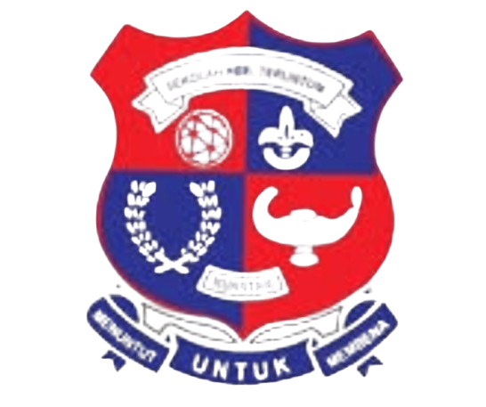

✦ Navigate ✦
🏠 Home 🌸 Bits of Me 🎓 Education 🎀 Experience 👨👩👧 Family 🧸 Enthusiast 💌 Galeria


I attended Smart Reader Kids during 5 to 6 years old. I enrolled their Seberang Perai, Pulau Pinang branch. This is where I started to learn about alphabet and numbers. Furthermore, before we start and end our class, all students would gather line by line according to our classes at the hall to do dances and sing along together!. Since it is located above Secret Recipe, my mom would eat our lunch there when she has her leisure time.
Visit Website
SK Teruntum is a primary school at Kuantan, Pahang. It is the first school I went when I moved to Pahang. I took my UPSR at this school. This school is located behind a bowling center, me and my friends would go there after class sometimes. Me and the friends I made here still contact each other till these days.
Methodist Girls Secondary School (MGSS) is my secondary school I enrolled after graduating from SK Teruntum. This school introduced me to the world of marching band. I was here during form 1 until form 3. Marching band practices were filled with pressure but it was fun at the same time!.
I moved to SMK Alor Akar during form 4 and manage to graduate at form 5. The studying environment here is quite tough, always being swamped with additional classes everyday from weekdays to weekend. However, the teachers here shows their sparks in their eyes to teach us willingly, which made me realise they are guiding me to shape into a better student. Alongside, I enjoyed being in this school with some new friends that I made.
Currently pursuing Diploma in Library Informatics here! I'm on my fourth semester and only have one left. I didn't know anyone when I got here, so I was quite anxious and feeling quite lonely, but know I've made a bunch of wonderful friends!.
Visit WebsiteClick the button to reveal a memory!